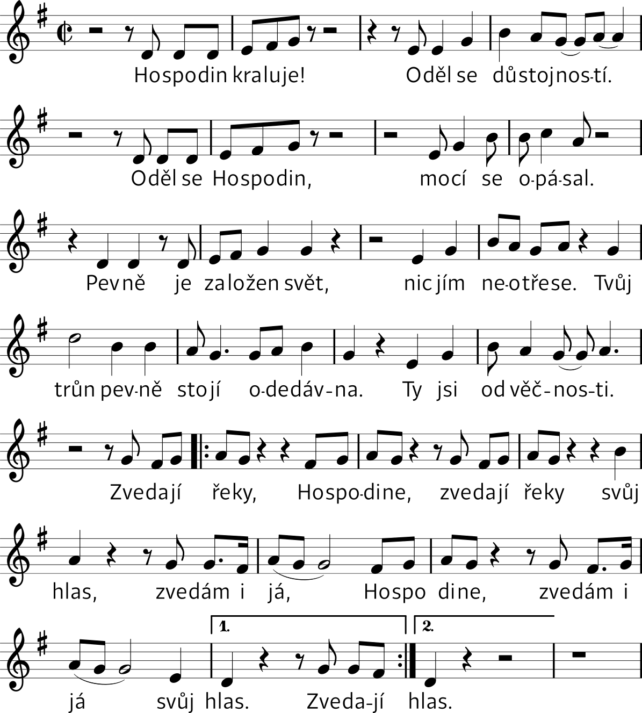

14. leden 2023
2. neděle v mezidobín
2. týden žaltáře
Bože, pospěš mi na pomoc.
Slyš naše volání.
Sláva Otci i Synu i Duchu Svatému,
jako byla na počátku, i nyní i vždycky a na věky věků. Amen. Aleluja.
HYMNUS
TN: Jiřina Gina Čunková (Koi 176)
1. Hospodin kraluje,
oděl se důstojností,
oděl se Hospodin,
mocí se opásal.
2. Pevně je založen svět,
nic jím neotřese,
tvůj trůn pevně stojí odedávna,
ty jsi od věčnosti.
R. Zvedají řeky, Hospodine,
zvedají řeky svůj hlas.
Zvedám i já, Hospodine,
zvedám i já svůj hlas.
ŽALMY
1. ant. Svítilnou mým nohám je tvé slovo, Hospodine, aleluja.
105Svítilnou mým nohám je tvé slovo *
a světlem mé stezce.
106Přísahám a pevně si umiňuji, *
že budu dbát na tvá spravedlivá rozhodnutí.
107Jsem velmi soužen, Hospodine, *
dej mi život podle svého slova.
108Sliby mých úst přijmi, Hospodine, *
a nauč mě svým rozhodnutím!
109Můj život je stále v nebezpečí, *
ale nezapomínám na tvůj zákon.
110Bezbožníci pro mě nastrojili léčku, *
ale nezbloudil jsem od tvých nařízení.
111Mým dědictvím navěky jsou tvá přikázání, *
neboť jsou radostí mého srdce.
112Přiměl jsem své srdce plnit tvé příkazy, *
trvale a přesně.
Sláva Otci i Synu *
i Duchu Svatému,
jako byla na počátku, i nyní i vždycky *
a na věky věků. Amen.
Ant. Svítilnou mým nohám je tvé slovo, Hospodine, aleluja.
2. ant. U tebe je hojná radost, Hospodine, aleluja.
2Ochraň mě, Bože, neboť se utíkám k tobě. †
2Pravím Hospodinu: „Ty jsi můj Pán. *
Bez tebe nemám štěstí.“
3K svatým, kteří jsou v zemi, *
jak podivuhodnou mi dal lásku!
4Rozmnožují si útrapy, *
kdo se drží cizích bohů;
nepřidružím svou úlitbu k jejich úlitbám krve, *
přes mé rty nepřejde ani jejich jméno.
5Ty jsi, Hospodine, mým dědičným podílem i mou číší, *
ty mně zachováváš můj úděl.
6Můj podíl padl do rozkošného kraje, *
mám velikou radost ze svého dědictví!
7Velebím Hospodina, že mi byl rádcem, *
k tomu mě i za nocí vybízí mé nitro.
8Hospodina mám neustále na zřeteli, *
nezakolísám, když je mi po pravici.
9Proto se raduje mé srdce, má duše plesá, *
i mé tělo bydlí v bezpečí,
10neboť nezanecháš mou duši v podsvětí, *
nedopustíš, aby tvůj svatý spatřil porušení.
11Ukážeš mi cestu k životu, †
u tebe je hojná radost, *
po tvé pravici je věčná slast.
Sláva Otci i Synu *
i Duchu Svatému,
jako byla na počátku, i nyní i vždycky *
a na věky věků. Amen.
Ant. U tebe je hojná radost, Hospodine, aleluja.
3. ant. Při Ježíšově jménu musí pokleknout každé koleno na nebi i na zemi, aleluja.
Flp 2,6-11
Kristus Ježíš, 6ačkoli má božskou přirozenost, *
nic nelpěl na tom, že je rovný Bohu,
7ale sám sebe se zřekl, †
vzal na sebe přirozenost služebníka *
a stal se jedním z lidí.
Byl jako každý jiný člověk, †
8ponížil se a byl poslušný až k smrti, *
a to k smrti na kříži.
9Proto ho také Bůh povýšil *
a dal mu Jméno nad každé jiné jméno,
10takže při Ježíšově jménu musí pokleknout každé koleno *
na nebi, na zemi i v podsvětí
11a každý jazyk musí k slávě Boha Otce vyznat: *
Ježíš Kristus je Pán.
Sláva Otci i Synu *
i Duchu Svatému,
jako byla na počátku, i nyní i vždycky *
a na věky věků. Amen.
Ant. Při Ježíšově jménu musí pokleknout každé koleno na nebi i na zemi, aleluja.
KRÁTKÉ ČTENÍ
1 Petr 1, 13–25
Povolání ke svatosti.
ZPĚV PO KRÁTKÉM ČTENÍ
N: J. Gałuszka OP; T: Bodnár OP (Koi 90a)

Ó, Bože, světlo naše, je důstojné Tě chválit, Otce, Syna i Ducha Svatého.
Ó, Bože, světlo naše, celý vesmír se Ti klaní, Otci, Synu i Duchu Svatému.
KANTIKUM PANNY MARIE
Antifona ke kantiku Panny Marie: Hle, beránek Boží, který snímá hříchy světa!
T: paraf. Magnificat; N: roráty, 16. století (K 813B)

1. Velebí má duše s jásotem, radostí
Pána věčné spásy, který dnes z výsosti
pohlédl k své dívce
pokorného srdce v lásce a milosti.
2. Již od této chvíle zástupy národů
v neustálé chvále po světa obvodu
slaviti mě budou,
dívku Páně chudou, v radostném závodu.
3. Veliké mi věci Hospodin učinil,
Pán můj nejvýš svatý ve mně si zalíbil.
Duši bohabojné
dary nebes hojné od věků připravil.
4. Ramenem své moci on pyšné rozptýlil,
sesadil i mocné, pokorné povýšil.
Sytí všechny lačné,
bohaté a pyšné s prázdnou pryč propustil.
5. V lásce své se ujal národa svatého,
pamětliv je slibu praotcům daného,
že z Judova rodu
přijde spása lidu od Boha věčného.
Ant. Hle, beránek Boží, který snímá hříchy světa!
PROSBY
pro díky: Díky tobě, Pane.pro chvály: Chvála tobě, Pane.
pro prosby/přímluvy: Prosíme tě, vyslyš nás.
MODLITBA PÁNĚ
Otče náš, jenž jsi na nebesích,
posvěť se jméno tvé.
Přijď království tvé.
Buď vůle tvá jako v nebi, tak i na zemi.
Chléb náš vezdejší dej nám dnes.
A odpusť nám naše viny,
jako i my odpouštíme našim viníkům.
A neuveď nás v pokušení,
ale zbav nás od zlého.
Neboť tvé je království i moc i sláva navěky.
MODLITBA
Všemohoucí, věčný Bože, ty řídíš všechno na nebi i na zemi; vyslyš prosby svého lidu a dej našim dnům svůj řád a mír. Prosíme o to skrze tvého Syna Ježíše Krista, našeho Pána, neboť on s v jednotě Ducha Svatého žije a kraluje po všechny věky věků.
SALVE REGINA
Zdrávas, Královno; T: asi Heřman z Reichenau, 11. století; N: chorál (MZ 1001)

Salve, Regína, * mater misericórdiæ,
vita dulcédo et spes nostra, salve.
Ad te clamámus, éxules, fílii Hevæ.
Ad te suspirámus, geméntes et flentes in hac lacrimárum valle.
Eia ergo, advocáta nostra, illos tuos misericórdes óculos ad nos convérte.
Et Iesum, benedíctum fructum ventris tui, nobis post hoc exílium osténde.
O clemens, o pia, o dulcis Virgo María.